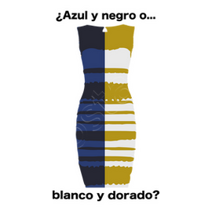

aqui tienes, el vestido que hiso que todo el intenet se volviera loco, ahora...
¿de que color ves este vestido?
¿es blanco y amarillo o azul y negro?


y otro ejemplo son las sapatillas
unos las ven rosas con blanco otros las ven verde con rosa bla bla bla...

pero lo que importa no son los colores.... es ver a todo el internet arder mientras todos debaten de que color es el vestido o las sapatillas :)
otos ejemplos de ilucones optias son la que juegan con tus ojos
como los circulos, ¿los ves diferentes? ¿si? pues.... ¡ESTAS COMPLETAMENTE MAL! ¡SON IGUALES! ¿no me crees?
a ver .. a ver ... mira cubre los sirculos grises, hahahhahaha te rompi los ojos y el cerebro
hahahaahaha te trolie, pero bueno las iluciones opticas son muy divertidas, sirven para perder el tiempo o entretener a la gente, bueno esa es la pagina ... ¿que si esto es todo? si ... ¿que? ¿esperabas mas cosas? pues no hay mas
bueno bye